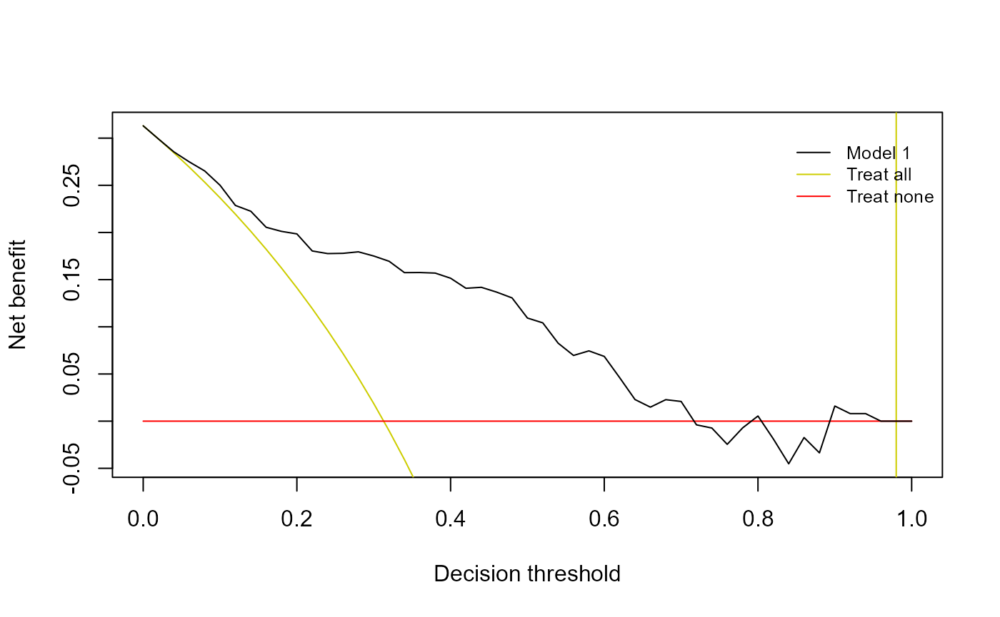
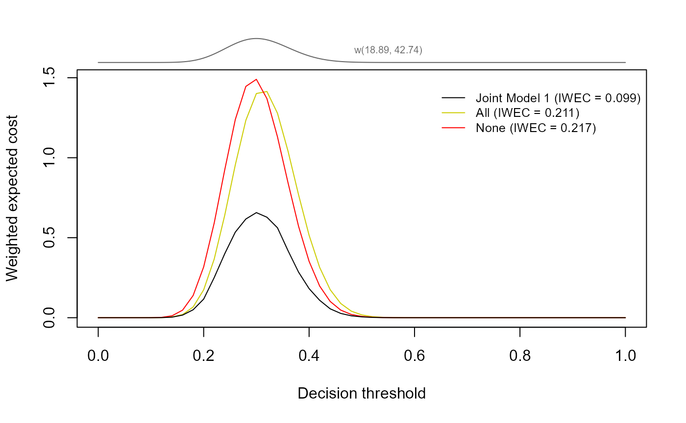
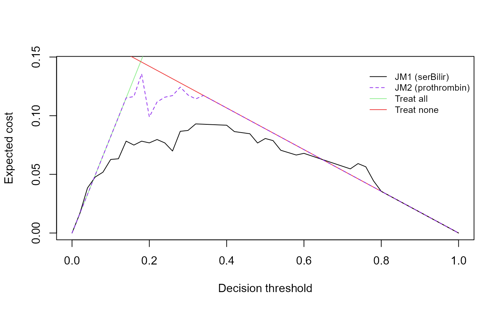
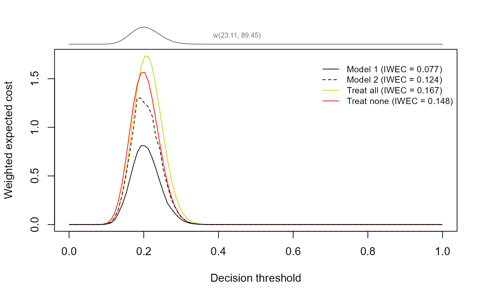
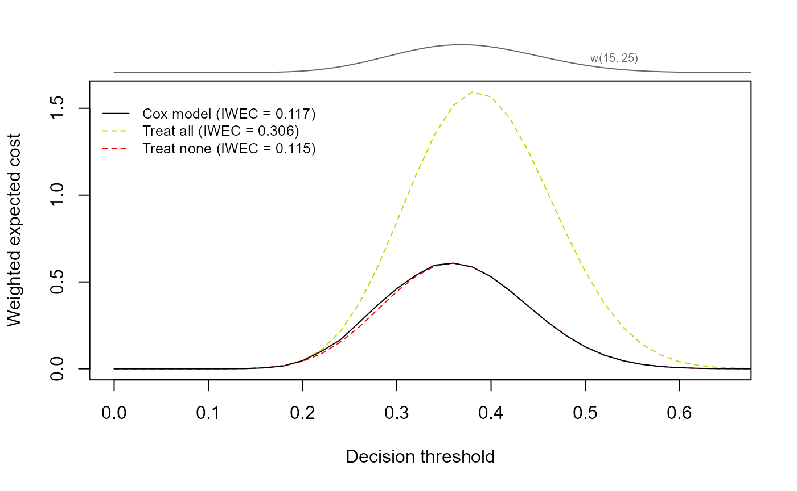
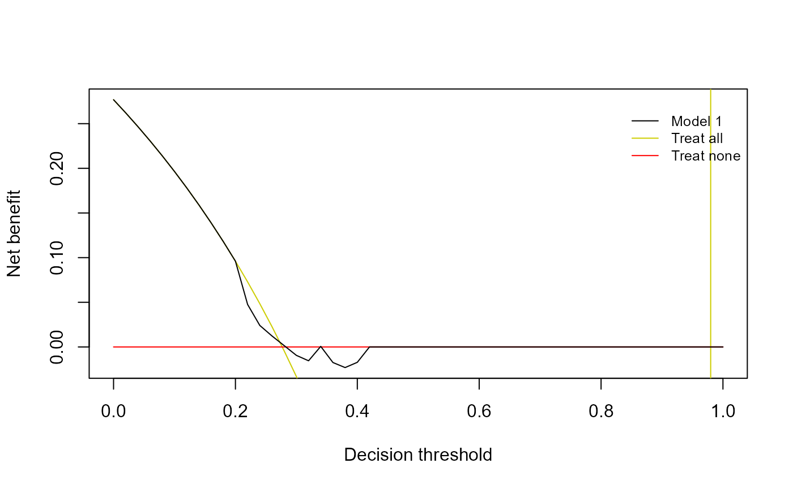

Clinical Utility Metrics to Evaluate Dynamic Predictions
Arnau Garcia-Fernández
2026-11-18
Source:vignettes/Clinical_Utility_Metrics.Rmd
Clinical_Utility_Metrics.RmdIntroduction
Dynamic risk prediction models, such as joint models, are increasingly used to estimate patient-specific risks and support clinical decision-making. Assessing the quality of these predictions is therefore essential. Common performance measures, including the Brier score, logarithmic score, and AUC, evaluate predictive accuracy but do not directly reflect the clinical consequences of decisions based on those predictions.
This vignette focuses on measures of clinical utility, including the net benefit (NB) and expected cost (EC), which have been adapted for the dynamic prediction setting. These measures account for the consequences of false positive and false negative decisions. We also present the integrated weighted expected cost (IWEC), a metric that considers clinical utility while achieving strict properness. An additional advantage of the IWEC is that it does not depend on a single decision threshold; instead, it utilizes a weight function that incorporates clinical knowledge in a more flexible manner. Another interesting feature of the IWEC is that it characterizes the class of strictly proper rules. The Brier score and the logarithmic score can be obtained as particular cases, as will be shown below with numerical examples. Additionally, we present a weighted decision curve that offers a graphical assessment of model performance.
The package implements both inverse probability weighting (IPW) and model-based estimation approaches for left-truncated and right-censored data (LTRC). The aim of this vignette is to introduce the available methods and demonstrate their use through practical examples with publicly available data.
Methods
We consider a study with n subjects. For subject i, let T_i^* denote the true event time, L_i the left-truncation time, C_i the right-censoring time, T_i=\min(T_i^*, C_i) the observed time, \delta_i=\mathbf{1}\{T_i^*\leq C_i\} the event indicator and \mathcal{H}_i(t) the available history at time t (including baseline and time-dependent covariates). We are interested in the subject-specific probability of experiencing the event within a time interval (t, t+s], given the information until the landmark time t, where s is a fixed prediction horizon. We define the dynamic predictions as the cumulative risk probabilities \pi_i(s\mid t)=\Pr(T_i^*\leq t + s\mid T_i^*>t, \mathcal{H}_i(t)).
For a given decision threshold c\in(0,1), we define the dynamic net benefit as
\begin{split} \text{NB}_c\big(\pi_i(s\mid t),D_i(t,s)\big) = & \mathbf{1}\{\pi_i(s\mid t)\geq c\} D_i(t,s)\\ &-\mathbf{1}\{\pi_i(s\mid t)\geq c\}\{1- D_i(t,s)\}\frac{c}{1-c}, \end{split}
where D_i(t,s)=\mathbf{1}\{t<T_i^*\leq t+s\} is a binary indicator that is 1 if the event is observed within (t,t+s], and 0 otherwise. For a given decision threshold c\in(0,1), we define the dynamic expected cost as
\begin{split} \text{EC}_c\big(\pi_i(s\mid t),D_i(t,s)\big) = & c\mathbf{1}\{\pi_i(s\mid t)\geq c\} \{1-D_i(t,s)\}\\ &+(1-c)\mathbf{1}\{\pi_i(s\mid t)< c\}D_i(t,s). \end{split}
To avoid reliance on a single threshold and achieve strict properness, we define the dynamic integrated weighted expected cost as
\text{IWEC}_w\big\{\pi_i(s\mid t),D_i(t,s)\big\} = \int_0^1\text{EC}_c\big\{\pi_i(s\mid t),D_i(t,s)\big\}w(c)dc,
where w(\cdot) is a positive and
measurable weight function over all decision thresholds c\in(0,1). In the tvIWEC()
function included in JMbayes2, we implemented this
metric using the beta family of weight functions, defined by the
two-parameter form w(c;\texttt{shape1},
\texttt{shape2})=c^{\texttt{shape1}-1}(1-c)^{\texttt{shape2}-1}/B(\texttt{shape1},
\texttt{shape2}), where \texttt{shape1}, \texttt{shape2}\geq 0 are
shape parameters and B(\texttt{shape1},\texttt{shape2})=1 if \texttt{shape1}=\texttt{shape2}=0, and
otherwise denote the beta function.
Examples
Joint models evaluation
For illustration, we use the pbc2 dataset available in
JMbayes2. The pbc2 includes just
right-censored data. Since we are interested in exemplify how the
functions presented in this vignette work with left-truncated and
right-censored (LTRC) data, we first generate left-truncation times for
the data:
set.seed(1234)
pbc2$lt <- unlist(by(pbc2, pbc2$id, function(x) rep(runif(1, 0, x$years), nrow(x))))
pbc2$event <- as.numeric(pbc2$status != "alive")
pbc2.id$lt <- pbc2$lt[match(pbc2.id$id, pbc2$id)]Then, we fit the Cox model for the time to either transplantation or
death, using then left-truncated and right-censored data. We included
the baseline covariates age and drug:
pbc2.id$event <- as.numeric(pbc2.id$status != "alive")
CoxFit <- coxph(Surv(lt, years, event) ~ drug + age, data = pbc2.id)For the longitudinal submodel, we consider the longitudinal outcome
serBilir, which is a continuous outcome. We allow for
nonlinear subject-specific time effects via natural cubic splines:
fm1 <- lme(log(serBilir) ~ ns(year, 3) * sex, data = pbc2,
random = ~ ns(year, 3) | id, control = lmeControl(opt = 'optim'))Now, we fit the joint model that will produce the dynamic predictions to be evaluated:
jm1 <- jm(CoxFit, fm1, time_var = "year")The net benefit quantifies the quality of decisions based on the
dynamic predictions given a decision threshold c\in (0,1). We consider the landmark time
Tstart=4 and the prediction horizon Dt=3. In
addition we consider the decision threshold c=0.3.
tvNB(jm1, newdata = pbc2, Tstart = 4, Dt = 3, decision_threshold = 0.3)
#>
#> Prediction Error for the Joint Model 'jm1'
#>
#> Estimated NB with decision threshold 0.3: 0.1751
#> At time: 7
#> For the 125 subjects at risk at time 4
#> Number of subjects with an event in [4, 7): 36
#> Number of subjects with a censored time in [4, 7): 29
#> Accounting for left truncation and right censoring using model-based weightsA similar clinical utility metric is the expected cost. Using the same landmark time, prediction horizon and decision threshold as above, now we use the IPW approach for the metric estimation:
tvEC(jm1, newdata = pbc2, Tstart = 4, Dt = 3, decision_threshold = 0.3, type_weights = "IPCW")
#>
#> Prediction Error for the Joint Model 'jm1'
#>
#> Estimated EC with decision threshold 0.3: 0.0944
#> At time: 7
#> For the 125 subjects at risk at time 4
#> Number of subjects with an event in [4, 7): 36
#> Number of subjects with a censored time in [4, 7): 29
#> Accounting for left truncation and right censoring using nonparametric inverse probability weightsOne might be interested in assessing clinical utility within a span
of relevant decision thresholds, say c\in(0.2,
0.375). The standard method to consider net benefit (or expected
cost) across multiple decision thresholds, is decision curve analysis.
We display a decision curve for the net benefit that allows us to
compare the joint model jm1 with the default strategies of
treat all individuals or none:
dc1 <- decision_curves(jm1, newdata = pbc2, Tstart = 4, Dt = 3, type = "NB")
plot(dc1)
We observe in the previous plot that jm1 yields greater,
and then better, NB estimates in most of decision thresholds. In
particular, in the interval of relevant decision thresholds (0.2, 0.375), we see that using the joint
model to decide on patient treatment is better than both treat all or
none patients.
However, decision curves are descriptive tools that do not provide a
single summary measure for model comparison. To address this limitation,
while using a metric that is strictly proper, we can use the integrated
weighted expected cost (IWEC). The IWEC allows us to flexibly
accommodate the clinical context through a weight function. We
implemented the beta family of weight functions, which is completely
specified by the shape parameters shape1 and
shape2. Instead of passing directly the shape parameters,
the user can pass the interval of relevant decision thresholds c\in(0.2, 0.375)
(interv=c(0.2, 0.375)), the mode (we set
mod=0.3) and the mass of the function to be allocated
within the interval (we set mass=0.85). By passing these
arguments, shape1 and shape2 are internally
computed.
tvIWEC(jm1, newdata = pbc2, Tstart = 4, Dt = 3,
mod = 0.3, interv = c(0.2, 0.375), mass = 0.85)
#>
#> Prediction Error for the Joint Model 'jm1'
#>
#> Estimated IWEC with shape parameters 18.8901 and 42.7436: 0.0993
#> At time: 7
#> For the 125 subjects at risk at time 4
#> Number of subjects with an event in [4, 7): 36
#> Number of subjects with a censored time in [4, 7): 29
#> Accounting for left truncation and right censoring using model-based weightsIn addition, we can plot a weighted decision curve, which displays the weighted expected cost and also the area under the weighted decision cuves that corresponds to the IWEC:
wdc1 <- decision_curves(jm1, newdata = pbc2, Tstart = 4, Dt = 3, type = "weightedEC",
mod = 0.3, interv = c(0.2, 0.375), mass = 0.85)
plot(wdc1, legend_names = c("Joint Model 1", "All", "None"))
At the top part of the plot we can see the shape of the weight
function used. We see that the joint model yields smaller, so better,
weighted EC estimates within the interval of decision thresholds of
interest. In addition, the IWEC is also better. Hence, we can conclude
that in the clinical context of interest, jm1 is a clinical
useful model.
Now, imagine that we consider multiple candidate joint models. We can
compare them via NB, EC, IWEC and also using weighted and unweighted
decision curves. Let us fit a different joint model, we consider the
prothrombin for the longitudinal submodel:
fm2 <- lme(prothrombin ~ ns(year, 2) * sex, data = pbc2,
random = ~ ns(year, 2) | id, control = lmeControl(opt = 'optim'))We then fit the joint model:
jm2 <- jm(CoxFit, fm2, time_var = "year")For illustration, we now change the clinical context and we assume
the interval of interest for decision thresholds is c\in(0.125, 0.275). We now consider as a
landmark time Tstart=6 and prediction horizon
Dt=2. For the NB and EC we will fix c=0.2:
tvNB(jm2, newdata = pbc2, Tstart = 6, Thoriz = 8,
decision_threshold = 0.2, type_weights = "IPCW")
#>
#> Prediction Error for the Joint Model 'jm2'
#>
#> Estimated NB with decision threshold 0.2: 0.054
#> At time: 8
#> For the 121 subjects at risk at time 6
#> Number of subjects with an event in [6, 8): 19
#> Number of subjects with a censored time in [6, 8): 33
#> Accounting for left truncation and right censoring using nonparametric inverse probability weights
tvEC(jm2, newdata = pbc2, Tstart = 6, Thoriz = 8,
decision_threshold = 0.2, type_weights = "IPCW")
#>
#> Prediction Error for the Joint Model 'jm2'
#>
#> Estimated EC with decision threshold 0.2: 0.099
#> At time: 8
#> For the 121 subjects at risk at time 6
#> Number of subjects with an event in [6, 8): 19
#> Number of subjects with a censored time in [6, 8): 33
#> Accounting for left truncation and right censoring using nonparametric inverse probability weightsFor the decision curve of the expected cost, by default the weight
function is displayed to show the relative importance of all decision
thresholds. So, let’s assume that we want to assign a high relevance to
the interval c\in(0.125, 0.275), say
mass=0.95 (the default). The decision curve for the
expected cost, including both jm1 and jm2
is:
dc_ec1 <- decision_curves(jm1, newdata = pbc2, Tstart = 6, Dt = 2,
type_weights = "IPCW", mod = 0.2, interv = c(0.125, 0.275))
dc_ec2 <- decision_curves(jm2, newdata = pbc2, Tstart = 6, Dt = 2,
type_weights = "IPCW", mod = 0.2, interv = c(0.125, 0.275))
plot(dc_ec1, dc_ec2,
legend_names = c("JM1 (serBilir)", "JM2 (prothrombin)", "Treat all", "Treat none"),
col = c("black", "purple2", "lightgreen", "brown2"))
We observe that the joint model using the serum bilirubin overcomes the default strategies for thresholds from 0 to 0.6. The joint model using the prothrombin is just improving the default strategies within (0.18, 0.4), approximately.
We can compute the IWEC for both joint models, using the weight
function above. For the first joint model (the one using
serBilir):
tvIWEC(jm1, newdata = pbc2, Tstart = 6, Thoriz = 8,
mod = 0.2, interv = c(0.125, 0.275))
#>
#> Prediction Error for the Joint Model 'jm1'
#>
#> Estimated IWEC with shape parameters 23.1117 and 89.4466: 0.0766
#> At time: 8
#> For the 121 subjects at risk at time 6
#> Number of subjects with an event in [6, 8): 19
#> Number of subjects with a censored time in [6, 8): 33
#> Accounting for left truncation and right censoring using model-based weightsAnd, for jm2 (joint model using
prothrombin):
tvIWEC(jm2, newdata = pbc2, Tstart = 6, Thoriz = 8,
mod = 0.2, interv = c(0.125, 0.275))
#>
#> Prediction Error for the Joint Model 'jm2'
#>
#> Estimated IWEC with shape parameters 23.1117 and 89.4466: 0.124
#> At time: 8
#> For the 121 subjects at risk at time 6
#> Number of subjects with an event in [6, 8): 19
#> Number of subjects with a censored time in [6, 8): 33
#> Accounting for left truncation and right censoring using model-based weightsWe can compare jm1, jm2 as well as the
default strategies with the weighted decision curve. In this case we
consider a finer grid of decision thresholds to plot the decision
curve.
wdc1 <- decision_curves(jm1, newdata = pbc2, Tstart = 6, Dt = 2, type = "weightedEC",
mod = 0.2, interv = c(0.125, 0.275),
decision_threshold_range = seq(0.001, 0.999, length.out = 100))
wdc2 <- decision_curves(jm2, newdata = pbc2, Tstart = 6, Dt = 2, type = "weightedEC",
mod = 0.2, interv = c(0.125, 0.275),
decision_threshold_range = seq(0.001, 0.999, length.out = 100))
plot(wdc1, wdc2)
In this plot, we see that both joint models overcome the default strategies when incorporating the relative relevance of the decision thresholds via the weight function w(c;23.11, 89.45). However, the joint model using the serum bilirubin yields better estimates per each relevant decision threshold as well as with respect the IWEC.
Cox proportional hazards models evaluation
Notably, the implementation supports both joint models
(jm class objects) and Cox proportional hazards models
(coxph class objects). This is, all the functions above can
also be used with Cox models. Let us consider the Cox model used in the
survival process of the joint models fitted above. We can assess
predictive performance via the net benefit:
tvNB(CoxFit, newdata = pbc2.id, Tstart = 5, Thoriz = 7.5,
decision_threshold = 0.125, type_weights = "IPCW")
#>
#> Prediction Error for the Cox Model 'CoxFit'
#>
#> Estimated NB with decision threshold 0.125: 0.1328
#> At time: 7.5
#> For the 134 subjects at risk at time 5
#> Number of subjects with an event in [5, 7.5): 28
#> Number of subjects with a censored time in [5, 7.5): 41
#> Accounting for left truncation and right censoring using nonparametric inverse probability weightsSimilarly, we can use the expected cost:
tvEC(CoxFit, newdata = pbc2.id, Tstart = 6, Dt = 3,
decision_threshold = 0.45, name_model = "Proportional Hazards Model")
#>
#> Prediction Error for the Cox Model 'Proportional Hazards Model'
#>
#> Estimated EC with decision threshold 0.45: 0.1783
#> At time: 9
#> For the 121 subjects at risk at time 6
#> Number of subjects with an event in [6, 9): 29
#> Number of subjects with a censored time in [6, 9): 45
#> Accounting for left truncation and right censoring using model-based weightsThe IWEC also supports Cox models:
tvIWEC(CoxFit, newdata = pbc2.id, Tstart = 6, Thoriz = 8,
shape1 = 2, shape2 = 2)
#>
#> Prediction Error for the Cox Model 'CoxFit'
#>
#> Estimated IWEC with shape parameters 2 and 2: 0.0877
#> At time: 8
#> For the 121 subjects at risk at time 6
#> Number of subjects with an event in [6, 8): 19
#> Number of subjects with a censored time in [6, 8): 33
#> Accounting for left truncation and right censoring using model-based weightsDecision curves can be easily displayed also with Cox models:
cox_wdg <- decision_curves(CoxFit, newdata = pbc2.id, Tstart = 6, Thoriz = 8,
type = "weightedEC", shape1 = 15, shape2 = 25)
plot(cox_wdg,
legend_names = c("Cox model", "Treat all", "Treat none"),
legend_loc = "topleft",
lty = c(1, 2, 2),
xlim = c(0, 0.65))
The IWEC reduces to the 1/2 times
the Brier score when shape1=1 and
shape2=1:
iwec1_1 <- tvIWEC(CoxFit, newdata = pbc2.id, Tstart = 2, Dt = 5, shape1 = 1, shape2 = 1,
type_weights = "IPCW")
bs_expl <- tvBrier(CoxFit, newdata = pbc2.id, Tstart = 2, Dt = 5,
type_weights = "IPCW")
cat("IWEC when shape1 = shape2 = 1:", 2 * iwec1_1$metric, "\n")
#> IWEC when shape1 = shape2 = 1: 0.2364726
cat("Brier score:", bs_expl$Brier)
#> Brier score: 0.2364726In addition, the logarithmic score is also a particular case of the
IWEC that is obtained when shape1=0 and
shape2=0.
General dynamic predictions evaluation
In addition, because these metrics can be applied to dynamic predictions obtained from any kind of model, we implemented a general ‘default’ method that works by using the vector of dynamic predictions, the observed times, the event indicator and the left-truncated times. Let’s see some examples of this.
First, we compute dynamic predictions for the time window (5, 8] using the Cox model above:
sfit_5 <- summary(survfit(CoxFit, newdata = pbc2.id), times = 5)
sfit_8 <- summary(survfit(CoxFit, newdata = pbc2.id), times = 8)
predictions <- 1.0 - (as.matrix(sfit_8$surv)[1L, ] / as.matrix(sfit_5$surv)[1L, ])Now, we compute the net benefit with decision threshold 0.375, we use the IPW estimator:
tvNB(predictions, Time = pbc2.id$years, LT_Time = pbc2.id$lt, event = pbc2.id$event,
decision_threshold = 0.375, Tstart = 5, Thoriz = 8, type_weights = "IPCW")
#>
#> Prediction Error for the predictions 'predictions', observed times 'pbc2.id$years', event indicator 'pbc2.id$event' and left-truncated times 'pbc2.id$lt'
#>
#> Estimated NB with decision threshold 0.375: -0.0049
#> At time: 8
#> For the 134 subjects at risk at time 5
#> Number of subjects with an event in [5, 8): 31
#> Number of subjects with a censored time in [5, 8): 47
#> Accounting for left truncation and right censoring using nonparametric inverse probability weightsFor the default method, if we want to use the model-based estimator,
we must pass the preds_MB argument, which contains the
weights corresponding to the censored individuals under the model-based
approach. See an example using the same Cox model and time window below.
Now, we compute the IWEC with a weight function that has its mode in
0.33, and allocates 70\% of its mass within (0.125, 0.46).
ind_censoring <- pbc2.id$years > 5 & pbc2.id$lt < 5 & pbc2.id$years < 8 & pbc2.id$event == 0
sfit2_8 <- summary(survfit(CoxFit, newdata = pbc2.id[ind_censoring, ]),
times = 8)
sfit_cens <- summary(survfit(CoxFit, newdata = pbc2.id[ind_censoring, ]),
times = pbc2.id$years[ind_censoring])
preds_MB <- rep(NA, length(pbc2.id$years))
preds_MB[ind_censoring] <- 1.0 - (as.matrix(sfit2_8$surv)[1L, ] / as.matrix(sfit_cens$surv)[1L, ])
tvIWEC(predictions, Time = pbc2.id$years, event = pbc2.id$event, LT_Time = pbc2.id$lt,
Tstart = 5, Dt = 3, type_weights = "model-based", preds_MB = preds_MB,
mod = 0.33, interv = c(0.125, 0.46), mass = 0.7)
#>
#> Prediction Error for the predictions 'predictions', observed times 'pbc2.id$years', event indicator 'pbc2.id$event' and left-truncated times 'pbc2.id$lt'
#>
#> Estimated IWEC with shape parameters 3.4833 and 6.0418: 0.1528
#> At time: 8
#> For the 134 subjects at risk at time 5
#> Number of subjects with an event in [5, 8): 31
#> Number of subjects with a censored time in [5, 8): 47
#> Accounting for left truncation and right censoring using model-based weightsTo clarify the explanation regarding the preds_MB
argument: we need to provide a vector that matches the length of the
Time, event, and LT_Time vectors.
This new vector should contain NA values for all entries,
except for those corresponding to censored individuals, which should
hold the model-based weights.
For the decision curves the ‘default’ method work the same way:
dc_default <- decision_curves(predictions, Time = pbc2.id$years, event = pbc2.id$event,
LT_Time = pbc2.id$lt, Tstart = 5, Dt = 3,
type_weights = "IPCW", type = "NB")
plot(dc_default)